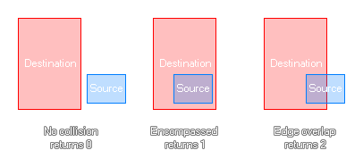

rectangle_in_rectangle(sx1, sy1, sx2, sy2, dx1, dy1, dx2, dy2);
| Argument | Description |
|---|---|
| sx1 | The x coordinate of the left side of the source rectangle. | sy1 | The y coordinate of the top side of the source rectangle. |
| sx2 | The x coordinate of the right side of the source rectangle. |
| sy2 | The y coordinate of the bottom side of the source rectangle. |
| dx1 | The x coordinate of the left side of the destination rectangle to check against. | dy1 | The y coordinate of the top side of the destination rectangle to check against. |
| dx2 | The x coordinate of the right side of the destination rectangle to check against. |
| dy2 | The y coordinate of the bottom side of the destination rectangle to check against. |
Returns: Real.
This function will check two rectangular areas that you define to see if the source rectangle is either not in collision, completely within the destination rectangles bounds, or if they are simply touching. If they are
not touching at all the function will return 0, if the source is completely within the destination it will return 1, and if they are simply overlapping then it will return 2. The image below illustrates this:

switch(rectangle_in_rectangle(x - 50, y - 50, x + 50, y + 50, mouse_x - 50, mouse_y - 50, mouse_x + 50, mouse_y + 50))
{
case 0: image_blend = c_yellow; break;
case 1: image_blend = c_red; break;
case 2: image_blend = c_orange; break;
}
The above code checks two rectangular areas for collision, and will set the instance image_blend based on the return value.